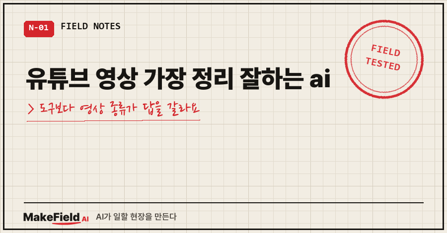
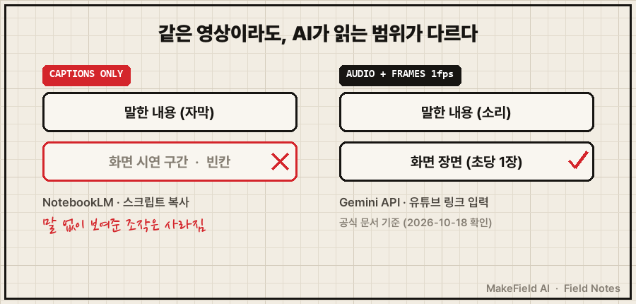
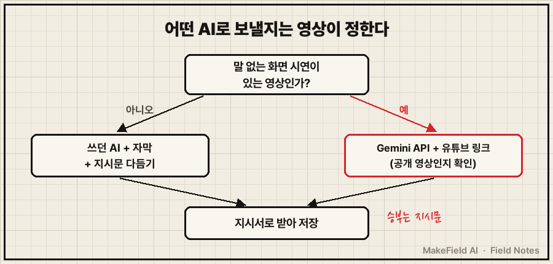

유튜브 영상 가장 정리 잘하는 ai는 영상 종류에 따라 다릅니다. 말로 하는 강의는 어떤 AI든 자막만 들어가면 실력이 비슷하고 승부는 지시문에서 나요. 화면 시연이 핵심인 영상은 화면까지 읽는 AI, 지금 공식 문서로 확인되는 건 제미나이(Gemini) API예요.
2026년 10월 18일 공식 문서 기준, Gemini API는 유튜브 링크를 넣으면 소리와 함께 화면을 초당 1장씩 읽고, NotebookLM은 텍스트 자막만 가져옵니다. 이 차이가 답을 갈라요.
저는 공장 자동화랑 제어 코드를 15년째 만지는 사람이에요. 영상을 내 AI 지식으로 옮기는 방식은 예전 글(5절 첫 링크)에 썼으니, 오늘은 "어떤 AI가 제일 잘하냐"만 다룹니다.
1. "제일 잘하는 AI"를 찾다가 제가 먼저 틀렸어요
저도 처음엔 똑같이 물었어요.
- 링크 넣으면 3줄, 10줄로 정리해 주는 요약 도구부터 썼고
- 빠르긴 했는데 남은 건 결론 뼈대뿐이었어요
- 정작 쓰고 싶던 작업 순서와 판단 기준은 다 빠져 있었거든요
그다음엔 제미나이한테 영상 내용을 뽑게 해서 제 로컬 AI에 심었어요. 지시를 대충 줬더니 또 매끈한 요약이 나왔고, "순서와 판단 기준을 살려라"를 콕 집어 주고 나서야 쓸 만한 지시서가 나왔죠. 그래도 말 없이 화면으로 보여 주는 시연 영상은 자막만으론 반쪽이었어요.
돌아보면 질문이 틀렸던 거예요. "어떤 AI가 제일 잘하냐"가 아니라 "그 AI가 영상의 어디까지를 읽느냐"를 물었어야 했죠.
2. 원인: 유튜브 영상 가장 정리 잘하는 ai는 '읽는 범위'에서 갈려요
정리 품질을 가르는 건 문장 실력이 아니라 입력이에요. 자막만 받은 AI는 화면에만 나온 내용을 알 수 없거든요.

공식 문서로 확인되는 범위만 표로 정리하면 이래요.
| 도구 | 유튜브 영상에서 읽는 것 | 공식 조건 |
|---|---|---|
| NotebookLM | 텍스트 자막만 | 자막 있는 공개 영상, 업로드 72시간 지나야, 음성 없는 영상 불가 |
| Gemini 앱 | 영상을 찾고 내용에 답함 (화면을 읽는지는 문서에 없음) | 로그인, 활동 기록 켜기, Live 대화 불가 |
| Gemini API | 소리 + 화면(초당 1프레임, 문서의 영상 처리 설명 기준) | 공개 영상만, 무료 등급 하루 8시간, 요청당 최대 10개, 기능은 preview |
| 스크립트 복사 → 아무 AI | 붙여 넣은 자막 텍스트 | 자막 있는 영상에서만 |
(→ https://ai.google.dev/gemini-api/docs/video-understanding , → https://support.google.com/gemininotebook/answer/16215270)
- 말 위주 강의: 어느 AI든 입력이 자막이라 비슷해요. 쓰던 AI에 자막을 넣고 지시문을 다듬는 게 가장 빨라요.
- 화면 시연 영상(프로그램 조작, 설정 화면): 화면까지 읽는 Gemini API로 보내요.
3. 해결: 화면 시연 영상을 Gemini API로 정리하는 4단계
미리 말씀드리면, 이 API 경로는 제가 직접 돌려 본 게 아니라 Google 공식 문서 예제를 옮긴 거예요. '반쪽' 문제 때문에 찾아서 문서로 확인한 단계입니다.
- Google AI Studio의 API keys 페이지에서 Create API key로 키를 만든다(→ https://ai.google.dev/gemini-api/docs/quickstart).
- 파이썬 라이브러리를 설치한다.
pip install -U google-genai- 키를 환경 변수에 넣는다. 윈도우 PowerShell은
$env:문법을 써요(→ https://learn.microsoft.com/powershell/module/microsoft.powershell.core/about/about_environment_variables).
$env:GEMINI_API_KEY="여기에_발급받은_키"이렇게 넣은 값은 지금 열린 PowerShell 창에서만 유지돼요. 창을 닫으면 다시 넣어야 합니다.
- 공식 예제 구조에 지시문만 바꿔 넣고 실행한다.
from google import genai
client = genai.Client()
interaction = client.interactions.create(
model='gemini-3.8-flash',
input=[
{"type": "text", "text": "이 영상을 내가 그대로 따라 할 수 있는 단계별 지시서로 바꿔줘. "
"요약 말고 작업 순서와 판단 기준을 살리고, "
"말없이 화면으로만 보여준 조작은 MM:SS 시각과 함께 따로 적어줘."},
{"type": "video", "uri": "https://www.youtube.com/watch?v=영상ID"}
]
)
print(interaction.output_text)
4. 확인 방법: 화면을 정말 읽었는지 시각으로 물어보세요
공식 문서는 MM:SS 형식으로 특정 시점을 물을 수 있다고 적어 둡니다. 이걸 검증에 써요.
03:20에 화면에 떠 있는 메뉴 이름과 눌린 버튼을 알려줘.- 자막에 없는 화면 요소(메뉴 이름, 버튼)를 맞히면 화면까지 읽은 거예요
- 말한 내용만 되풀이하면 자막만 쓴 결과예요
- 번호 붙은 단계와 판단 기준이 없으면 도구가 아니라 지시문 문제예요. 제가 매끈한 요약만 받았던 원인도 이거였어요
5. 같은 증상, 다른 경우
- 영상을 왜 요약이 아니라 '내 AI 지식'으로 심는지 → 유튜브 강의 AI로 정리하는 법
- '스크립트 표시' 버튼 위치, NotebookLM에 링크가 안 들어갈 때 → 유튜브 ai정리하는법
- 쓰던 ChatGPT로 강의 자막을 정리하고 싶을 때 → 챗지피티에서 유튜브 스크립트 추출 강의 요약
Q. 그래서 딱 하나만 고르면요?
말 위주 강의가 대부분이면 쓰던 AI 그대로 두세요. 바꿀 건 도구가 아니라 "순서와 판단 기준을 살려라" 한 줄이에요. 화면 시연 영상이 많을 때만 Gemini API를 더하면 됩니다.
Q. 일부 공개 영상도 되나요?
Gemini API와 NotebookLM 모두 공식 문서상 공개 영상만 돼요.
Q. 돈이 드나요?
공식 문서 기준 유튜브 URL 기능은 preview 단계이고 무료예요. 무료 등급은 하루 8시간 분량까지고, 정책은 바뀔 수 있어요.
유튜브 영상 가장 정리 잘하는 ai를 찾고 계셨다면, 먼저 그 영상에 말 없는 화면 구간이 있는지부터 보세요. 화면 시연 때문에 반쪽으로 남겨 둔 영상이 있다면 그게 첫 번째 재료예요. 영상 한 편을 실제 일에 붙여 쓰는 과정은 makefield.ai에서 이어서 적고 있습니다.
출처
- Google AI for Developers, Video understanding (YouTube URL·공개 영상·하루 8시간·요청당 10개·1fps·MM:SS·Python 예제) → https://ai.google.dev/gemini-api/docs/video-understanding
- Google AI for Developers, Gemini API quickstart (google-genai 설치·API 키·GEMINI_API_KEY) → https://ai.google.dev/gemini-api/docs/quickstart
- NotebookLM 고객센터, 노트북에 새 소스 추가 또는 찾기 → https://support.google.com/gemininotebook/answer/16215270
- Gemini 앱 고객센터, Gemini 앱에서 YouTube 콘텐츠 찾기 및 질문하기 → https://support.google.com/gemini/answer/16622858
- Microsoft Learn, about_Environment_Variables (PowerShell
$Env:문법, 변경은 현재 세션에만 적용) → https://learn.microsoft.com/powershell/module/microsoft.powershell.core/about/about_environment_variables - 2026년 10월 18일 원문 확인
태그: #유튜브영상가장정리잘하는ai #유튜브요약AI #유튜브정리AI #유튜브요약AI추천 #제미나이유튜브 #Gemini영상분석 #GeminiAPI #NotebookLM #노트북LM유튜브 #유튜브자막 #영상AI정리 #AI공부법 #AI활용법 #생성형AI #MakeFieldAI